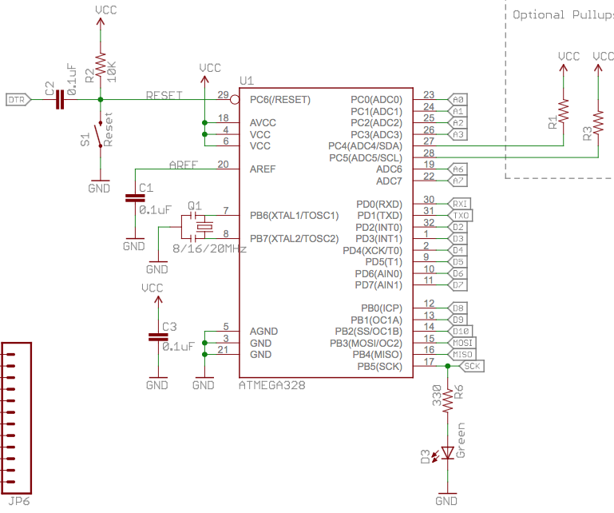
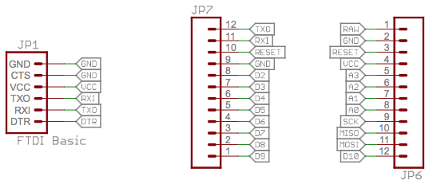
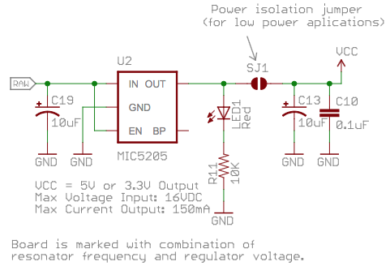

| 作者: | gashero |
|---|---|
| 日期: | 2013-08-16 |
目录
一个基于AVR单片机的开发板，有很多人玩，看起来也确实很方便。
参考文献：
Google Code的下载页： https://code.google.com/p/arduino/downloads/list 。
总之解压了就能用。
各种驱动不同，记得选取对应驱动的对应设备。也就是选择串口。
然后就是选择板子。
从arduino-1.5开始支持了Arduion DUE，因为要包含ARM编译器，所以体积大了好多。
最简单的程序，用于测试:
int led=13;
void setup() {
pinMode(led, OUTPUT);
}
void loop() {
digitalWrite(led, HIGH);
delay(1000);
digitalWrite(led, LOW);
delay(1000);
}
经过测试在Mac上FT232和CP2102两种的板子都能正常使用了。
用于扩展Arduino功能的，连接其他传感器、显示等等。附加库通常以目录或zip文件发布。目录里是.cpp和.h文件，以及keywords.txt，examples目录，以及其他所需文件。
从Arduion-1.0.5开始，可以在IDE里安装第三方库。无需解压下载的库，在Arduino里[Sketch]=>[Import Library]=>[Add Library]，然后选中下载的.zip文件即可。要使用则是[Sketch]=>[Import Library]然后菜单里选择所需的库。
库是自动导入的，但是例子需要重启Arduino后才能在[File]=>[Examples]里出现。
手动安装需要解压.zip文件，需先退出Arduino。然后将里面的.cpp和.h文件移动到库的目录里，记得在库目录里建立个带有附加库名字的文件夹，再放里。
需要依赖Python里的ino库，安装:
sudo pip install ino
ino是个构建工具，也包括上传。
初始化blink项目:
mkdir blink cd blink ino init -t blink
此时会建好lib目录，以及 src/sketch.ino 文件。这里-t是指定模板。
构建过程，生成文件在 .build
ino build
上传:
ino upload
build和upload可以指定目标的板子之类的。可以修改配置文件 ino.ini 来简化使用，例如:
[build] board-model = mega2560 [upload] board-model = mega2560 serial-port = /dev/ttyACM0 [serial] serial-port = /dev/ttyACM0
实际应用发现这个项目在2013年就停止维护了，最新版本0.3.6。当前Mac下直接使用 ino build 会失败，提示找不到 boards.txt 文件。其搜索的路径是 /Applications/Arduino.app/Contents/Resources/Java/hardware/arduino 而其实这个文件在 /Applications/Arduino.app/Contents/Java/hardware/arduino/avr/boards.txt ，是一个超过1000行的文本文件，记录了支持的各种版本的板子。显然这个问题来自于Arduino更新了，而ino却没有跟着更新。
搜索 boards.txt 文件的地方在 environment.py 里188行。
我做了如下修改：
82行:
arduino_dist_dir_guesses.insert(0, '/Applications/Arduino.app/Contents/Resources/Java') arduino_dist_dir_guesses.insert(0, '/Applications/Arduino.app/Contents/Java')
188行:
boards_txt = self.find_arduino_file('boards.txt', ['hardware', 'arduino'],
boards_txt = self.find_arduino_file('boards.txt', ['hardware', 'arduino', 'avr'],
然后就能正确的找到boards.txt了。不过后续还是出了其他问题，比如数据类型错误。
后来是下载安装了Arduino-1.0.6，然后就能编译过去了。
ArduinoIDE不能直接烧写HEX文件。
一个使用avrdude烧写Blink.hex的例子:
avrdude -q -c stk500v1 -P conn4 -b 57600 -p atmega328p -U flash:w:Blink.hex
Arduino Pro Mini比较简单，几乎就是个核心板。
芯片周边：
关键内容是DTR线通过一个104电容来触发RESET。复位电路还有个上拉电阻10K，但没有对地的电容。
晶振的电路则相对完善，有对地的电容。I2C有上拉电阻。
SPI的SCK引脚通过330R电阻接绿色LED对地，高电平点亮。
各个引脚的映射关系：
| Arduino | AVR |
| TXO | PD1/TXD |
| RXI | PD0/RXD |
| D2 | PD2/INT0 |
| D3 | PD3/INT1 |
| D4 | PD4/XCK/T0 |
| D5 | PD5/T1 |
| D6 | PD6/AIN0 |
| D7 | PD7/AIN1 |
| D8 | PB0/ICP |
| D9 | PB1/OC1A |
| D10 | PB2/SS/OC1B |
| D11 | PB3/MOSI |
| D12 | PB4/MISO |
| D13 | PB5/SCK |
| A0 | PC0/ADC0 |
| A1 | PC1/ADC1 |
| A2 | PC2/ADC2 |
| A3 | PC3/ADC3 |
| A4=SDA | PC4/ADC4/SDA |
| A5=SCL | PC5/ADC5/SCL |
| A6 | ADC6 |
| A7 | ADC7 |
A6和A7仅在贴片封装里有，DIP是没有的。
编程口注意CTS是直接接地的，DTR才是接复位的。对外接口部分没啥特别。
电源部分通过MIC5205来做稳压。点亮LED灯等等。手头找2个PRO MINI都有这部分电源电路。
RAW是稳压前的输入电源，最大16V。
默认的串口通信速率是57600bps，所以没有配置串口时，速率都是这个，容易让人误解。